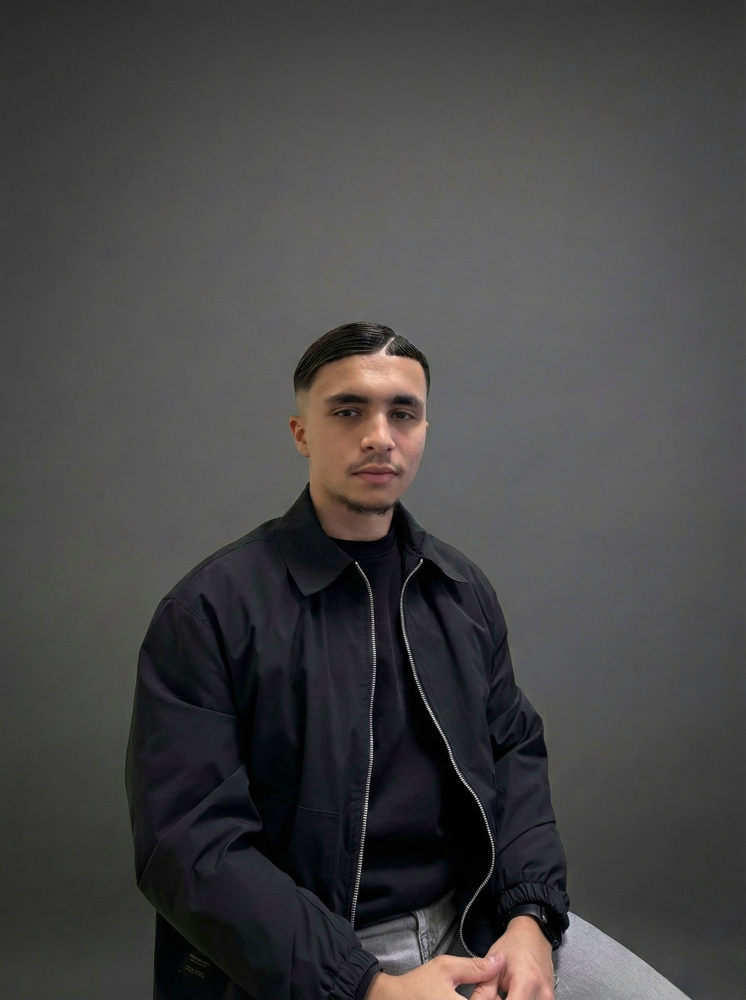

~/kylian-giard-ouadifi · portfolio_2026
Disponible en alternance · septembre 2026
Je conçois des expériences digitales.

Développeur Fullstack & Designer UX/UI en 3ᵉ année de BUT MMI à l'IUT de Bobigny. Je crée des interfaces élégantes et performantes.
Projets choisis
D'un vrai site client livré en stage à des applications web fullstack. Cliquez sur un projet pour l'étude de cas.
Parcours
Expérience et formation, du plus récent au plus ancien.
-
Septembre 2026
À venir
Recherche d'alternance
1/2 semaine en entreprise · Permis B, véhiculé
Développement Web / UX UI Design. Prêt à appliquer mes compétences en entreprise.
-
Avril — Juin 2026 · 8 semaines
Expérience
Stage — PALAN INFORMATIQUE
Plaisir (78) · Vente, réparation & services informatiques
Refonte complète du site web de l'entreprise sous WordPress + Elementor, création d'une boutique WooCommerce, optimisation SEO (Rank Math) et migration vers Hostinger. Projet mené en totale autonomie.
-
2024 — Présent
Formation
BUT MMI (3ᵉ année)
IUT de Bobigny
Métiers du Multimédia et de l'Internet. Spécialisation Dev & Design.
-
Sept 2023 — Jan 2024
Formation
Début BUT Informatique
IUT Paris Rives de Seine
Semestre initial en informatique pure avant réorientation vers MMI.
-
2021 — 2023
Formation
Bac STI2D option SIN
Lycée Agora, Puteaux
Obtenu avec mention Assez Bien.
Compétences
Une combinaison technique et créative.
Développement
- HTML / CSS / Tailwind
- React.js & Next.js
- PHP & MySQL
- WordPress
Design UI/UX
- Figma
- Adobe Suite
- Prototypage
Outils
- Git & GitHub
- VS Code
- Notion
- Trello
Soft skills
- Méthodologie Agile
- Travail d'équipe
- Autonomie & curiosité
À propos
Ce qui me motive ? Trouver le point d'équilibre parfait entre une esthétique soignée et un code propre et performant.
J'ai 21 ans et je vis à Courbevoie (92). Actuellement en troisième année de BUT MMI à l'IUT de Bobigny, je me spécialise dans le développement web Fullstack et le design d'interface. Titulaire du permis B et véhiculé.
Ce que j'aime
- Photo
- Boxe thaï
- Voyage
- Musique
Contact
Je suis toujours intéressé par de nouvelles opportunités et collaborations.